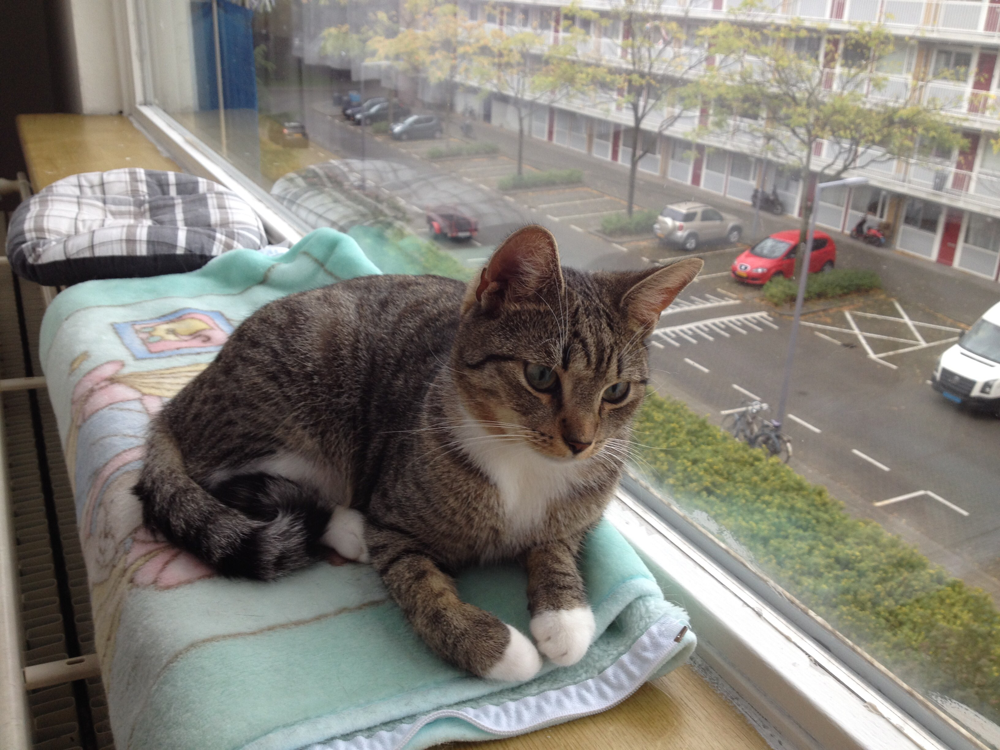
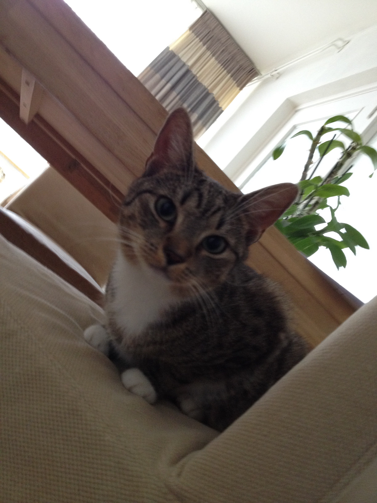

Katten zijn een van de oudste huisdieren. Een mannelijke kat noem je een kater terwijl je een vrouwlijke kat een poes noemt. Jonge katten worden kittens genoemd. Op een leeftijd van tien jaar wordt een kat bejaard en ze sterven ongeveer na veertien tot zestien jaar. Katten zijn carnivoren, dit betekent dat ze vleeseters zijn. Om zichzelf te wassen gebruiken ze hun tong die bedekt is met ruwe papillen. Een kat kan heel goed in het donker zien. Katten kunnen ook uitstekend horen en kunnen hun oren draaien, waardoor ze geluiden beter kunnen vinden. Katten zijn vooral 's nachts actief en in de dag rusten ze uit door te slapen. Ze spelen door te jagen, want dat is wat ze in de natuur doen.
Dit is Senegal. Senegal is een donkere kater met een witte buik en pootjes. Je kan wel zeggen dat hij witte sokken aan heeft. We kregen hem toen hij klein was uit Polen. Hij heeft 2 broertjes en zusjes. Senegal was toen een paar weken oud en deed heel stoer. Hij was heel dapper, maar met tijd werd dat minder. Hij leefde samen met Ofelia, maar die overleed na een paar jaar. Senegal werd daardoor heel depressief, dus we hebben Sally geadopteerd. Hij gaat nu goed met Sally om en is heel blij. Senegal houdt heel erg van warmte en gaat daarom in de winter op de verwarming liggen.